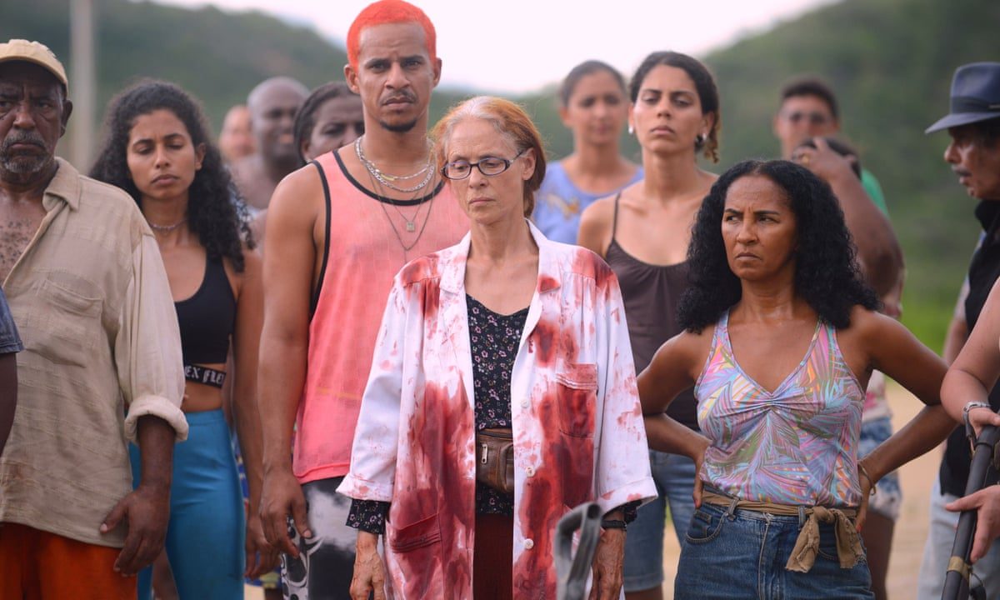

See
A Psychedelic Western
From Kleber Mendonça Filho (Aquarius) and Juliano Dornelles comes a daring, intoxicating blend of neo-Western, siege thriller and political allegory—powerfully resonating with today’s Brazil, where the film was a box-office hit! A winner of the Cannes Jury Prize, starring Udo Kier and Sônia Braga.
 Watch Bacurau on MubiListen
Joyce & Donato's Aquarius (2010).
"Injecting pure-quality jazz into bossa nova, old-school Brazilian samba and laid back Cuban vibes, ‘Aquarius’ is intricate yet endlessly listenable."
 Listen to Aquarius on
Bandcamp
Listen to Aquarius on
Bandcamp
Taste
Picanha Steak recipe
Picanha is Brazil’s favourite steak – a delicious large cut from the rump. Triangular, and with a beautiful crust of fat on top, it’s typically barbecued then sliced to share. Because the muscle has done a lot of work, the meat can be tough if overcooked. But when seared to a juicy medium-rare, it will reward you with a fantastic, deep, beefy flavour.
 Picanha steak recipe
Picanha steak recipe